1. 부호화(Encoding) (원본 p.205)
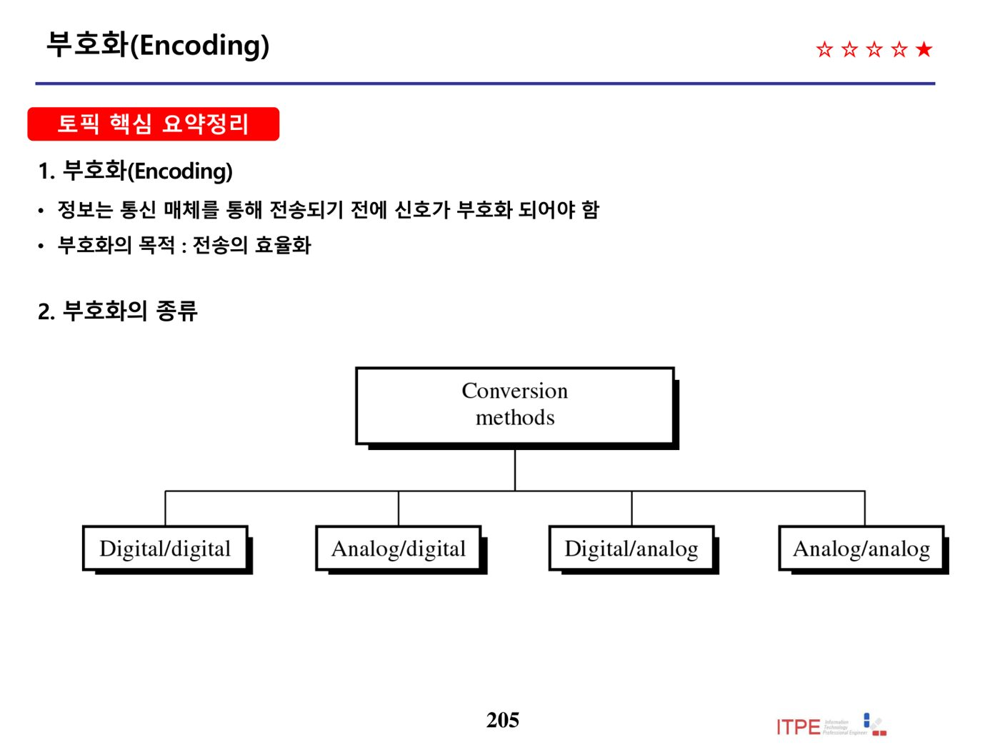
3. 부호화 방식 (원본 p.206-208)
▸ 원본 p.206 표: 부호화 방식
| 전송형태 | 신호변환방식 | 변조방식 |
|---|---|---|
| 디지털 전송 | • 디지털정보 디지털신호 • 2진수 1과 0비트를 전압 값으로 대응하여 나타냄 | 베이스밴드 |
| • 아날로그정보 디지털신호 • Pulse Code Modulation • 아날로그 신호를 표본화(sampling), 양자화, 부화화하는 과정을 통해 디지털신호(펄스부호)로 변환하여 전송 | 펄스부호 변조 (PCM) | |
| 아날로그 전송 | • 디지털 정보 아날로그 신호 • 진폭 편이 변조(ASK, Amplitude Shift Keying) • 주파수 편이 변조(FSK, Frequency Shift Keying) • 위상 편이 변조(PSK, Phase Shift Keying) • 진폭 위상 편이 변조 | 디지털 변조 대역전송 |
| • 아날로그 정보 아날로그 신호 • 디지털 변조방식과 기본 원리는 비슷 • 진폭변호(AM), 주파수 변소(FM), 위상변조(PM) | 아날로그 변조 |
| 구분 | 내용 |
|---|---|
| 아날로그 아날로그 | • AM(Amplitude Modulation), FM(Frequency Modulation) • PM(Phase Modulation) |
| 아날로그 디지털 | • PCM(Pulse Code Modulation), PAM(Pulse Amplitude Modulation) • PPM(Pulse Position Modulation), PWM(Pulse Width Modulation) • DM(Delta Modulation) |
| 디지털 아날로그 | • ASK(Amplitude Shift Keying), FSK(Frequency Shift Keying) • PSK(Phase Shift Keying), QAM(Quadrature Amplitude Modulation) |
| 디지털 디지털 | • Unipolar, Bipolar • NRZ-L(Non Return to Zero Level), NRZ-I(Non Return to Zero Inverted) • CMI(Code Mark Inversion), Manchester |
1. 샤논(Shannon)의 공식 (원본 p.209)
▸ 원본 p.209: 샤논(Shannon)의 공식
1. 샤논(Shannon)의 공식
- 채널용량과 대역폭은 선형 비례관계에 있으며, 신호대 잡음은 로그함수에 의해 일차함수로 증가한다고 볼수는 없으나 비례 관계에 있음
- Shannon-Hartley’s law는 채널의 최대 용량을 정의한 법칙
- C는 capacity(용량), B는 bandwidth, S/N은 signal to noise ratio이며, 이상적인 상황에서 채널은 무한대의 용량을 가지고 통신을 할 수 있겠지만, 노이즈가 있기 때문에 실제 채널의 최대 용량은 위 공식이 적용됨
- 보내는 신호의 파워가 노이즈의 파워보다 크면 클수록 그리고 채널의 대역폭(bandwidth)이 커야 정해진 시간 내에 많은 정보를 주고 받으며, 컴퓨터 네트워크에서의 적용을 보면 채널의 대역폭이 B Hz일 때 초당 최대 전송 비트수(bps)는 Blog(1+S/N)
1. 유선통신 방식 (원본 p.210)
▸ 원본 p.210 표: 유선통신(Wire Communication)
| 구분 | 내용 |
|---|---|
| X.25 | • ITU-T의 X 표준 중 하나로 Frame Relay의 근간을 이루는 전송 프로토콜 |
| Frame Relay | • 프레임 릴레이는 근거리 통신망들 사이 또는 광역통신망 내의 단말지점들 간에 간헐적인 트래픽을 위해, 비용대비 효율이 좋은 전송 서비스 • 프레임이라고 불리는 가변적인 크기 단위 내에 데이터를 집어넣고, 꼭 필요한 에러 교정기능은 종단에 맡김으로써, 전체적인 데이터 전송 능률을 올림 |
| ATM | • 비동기 전송방식(Asynchronous Transfer Mode, 비동기전송방식교환체계)은 자료를 일정한 크기로 정하여 순서대로 전송하는 자료의 전송방식 |
| MPLS | • 주어진 패킷 열에 대하여 특정 경로를 설정하는 것에 관여하는데, 각 패킷 내에는 라벨이 있어서 라우터 입장에서는 그 패킷을 전달해야 할 노드의 주소를 보는데 소요되는 시간을 절약할 수 있음 |
| DWDM | • 여러 종류의 데이터를 하나의 광섬유에 함께 싣는 기술로서, 각 신호들은 분리된 고유의 광파장 상에서 전송 |
2. MPLS 네트워크 (원본 p.211-215)
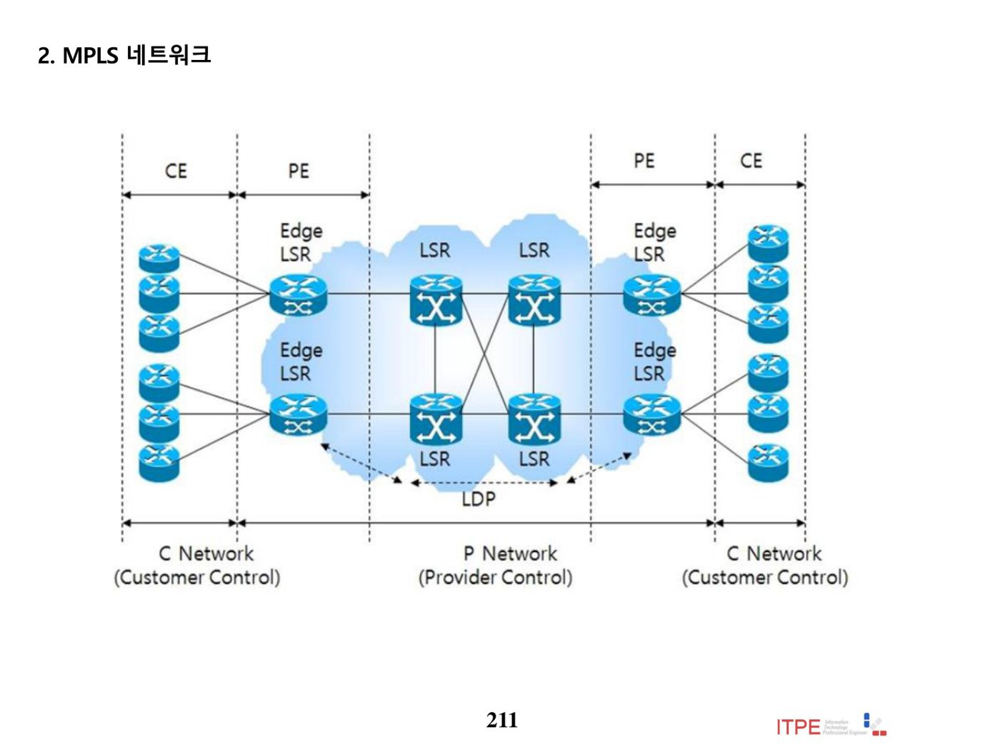
| 구분 | 내용 |
|---|---|
| LAN 서비스 표준 | • IEEE 802.3 |
| 물리계층 | • 신호와 배선 |
| 데이터 링크 | • MAC(Media Access Control) 패킷과 프로토콜 정의 |
| 전송 대역폭 | • Ethernet : 10Mbps, Fast Ethernet : 100Mbps, Gigabit Ethernet : 1Gbps |
| 구분 | 내용 |
|---|---|
| HomePlug | • 전력선 통신 참여 기업들이 Homeplug Powerline Alliance를 결성하여 기술 표준을 제정 • 4~20MHz 주파수, OFDM 변조방식, 전송율 10Mbps • HomePlug AV, HomePlug Green PHY 등의 표준 제정 |
| X-10 | • 가정 내의 옥내전기 배선을 통해 설비간 통신을 원격제어하기 위한 통신 프로토콜로서 주로 건물 자동화에 활용 |
| LonWorks | • 전력선을 이용한 분산제어 네트워크 기술로서 홈네트워킹 분야를 겨냥하여 제정 • 홈네트워킹 분야의 표준으로 사용됨 |
| CEBus | • EIA(Electronics Industry Association)의 회원들을 중심으로 제안 및 개발된 것으로 CEBus 표준기술을 결합한 제품들은 상호간에 통신 가능 |
1. 통신방식(변조 및 매체접근 제어방식) (원본 p.216-219)
▸ 원본 p.216 표: 통신방식
| 구분 | 내용 |
|---|---|
| Slotted ALOHA | • 각 노드들은 동기화를 통한 시간 단위를 slot으로 인식하고 slot 시작 경계에 데이터를 전송 • 동일한 slot 시간대에 2개 이상의 노드에서 동시에 데이터를 전송하면 충돌이 발생하며 일정시간 후에 재 전송 |
| CSMA/CD | • Carrier Sense Multiple Access with Collision Detection • 매체에 데이터 전송시 충돌을 감지하여 충돌이 발생할 경우 랜덤한 시간 이후에 데이터 재전송 |
| FDMA | • Frequency Division Multiple Access • 주파수 단위로 분할하여 동기화가 필요 없으며 구현이 간단하지만 전력소모가 크고 스펙트럼 효율 낮음 |
| TDMA | • Time Division Multiple Access • Time slot 단위로 전송 단위를 분할. 상호변조가 필요 없고 스펙트럼 효율이 높음. 동기화가 필요 |
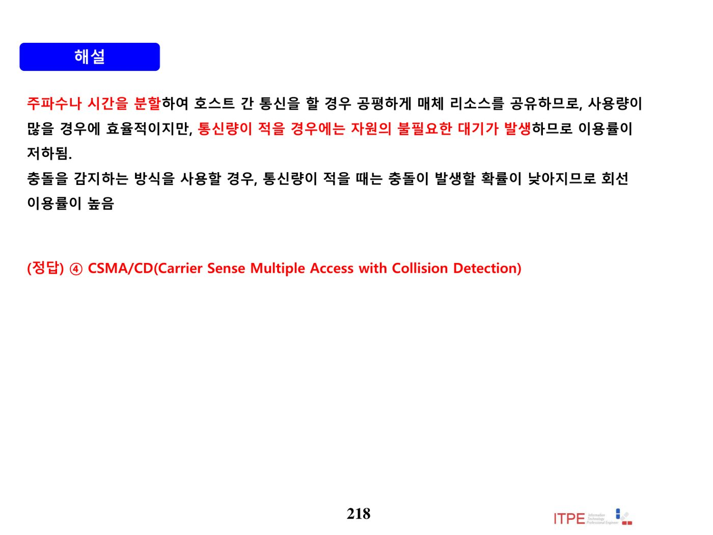
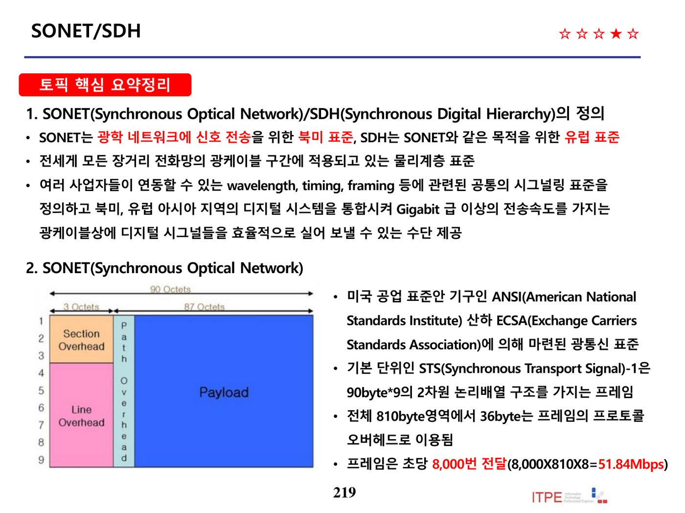
4. 광학 네트워크 신호전송 표준 (원본 p.220-222)
▸ 원본 p.220 표: SDH(Synchronous Digital Hierarchy)
| OC 레벨 | SONET 레벨 | SDH 레벨 | 대역폭 |
|---|---|---|---|
| OC-1 | STS-1 | - | 51.84Mbps |
| OC-3 | STS-3 | STM-1 | 155.52Mbps |
| OC-9 | STS-9 | STM-3 | 466.56Mbps |
| OC-12 | STS-12 | STM-4 | 622.08Mbps |
| OC-18 | STS-18 | STM-6 | 933.15Mbps |
| OC-24 | STS-24 | STM-8 | 1244.16Mbps |
| OC 레벨 | SONET 레벨 | SDH 레벨 | 대역폭 |
|---|---|---|---|
| OC-1 | STS-1 | - | 51.84Mbps |
| OC-3 | STS-3 | STM-1 | 155.52Mbps |
| OC-9 | STS-9 | STM-3 | 466.56Mbps |
| OC-12 | STS-12 | STM-4 | 622.08Mbps |
| OC-18 | STS-18 | STM-6 | 933.15Mbps |
| OC-24 | STS-24 | STM-8 | 1244.16Mbps |
1. VLAN(Virtual LAN)의 정의 (원본 p.223)
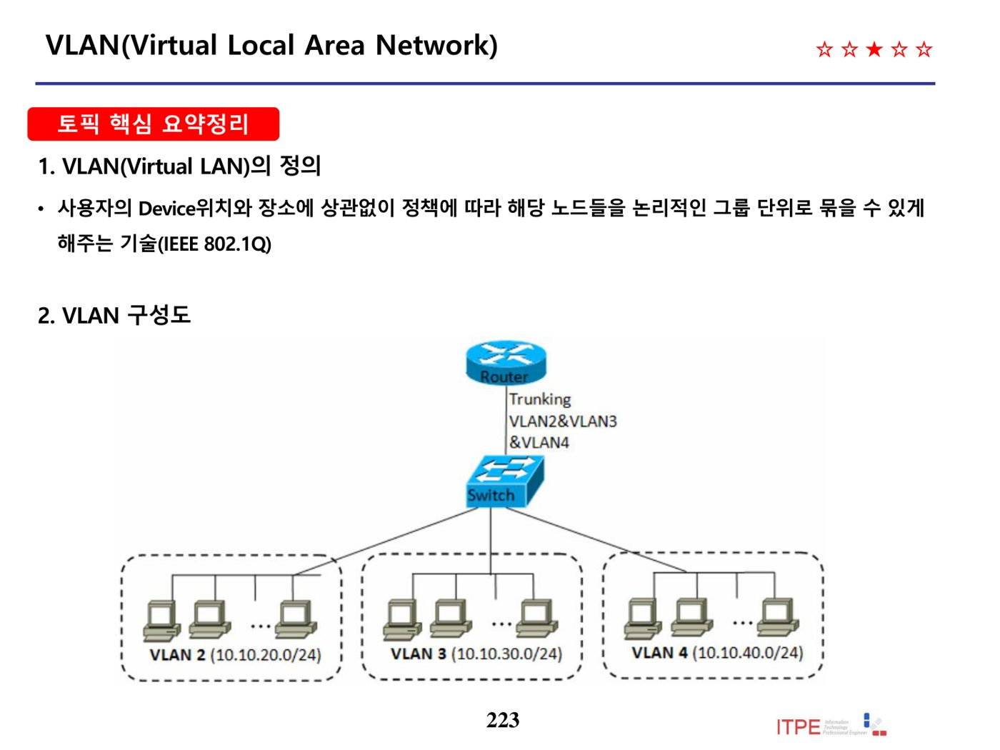
3. VLAN 그룹화 기준 (원본 p.224-226)
▸ 원본 p.224 표: VLAN 그룹화 기준
| 구분 | 내용 |
|---|---|
| Port | • 스위치의 물리적인 포트(port)별 구성 |
| Mac Address | • NIC(Network Interface Card) 의 MAC 주소 기준으로 구성 |
| Protocol | • 프로토콜(TCP, IP 등) 기준으로 그룹 형성 |
| IP Subnet | • IP 주소 대역을 기준으로 구성 |
| 구분 | 내용 |
|---|---|
| Trunk Link | • Trunk Link로 접속되어 있는 모든 장치(device, workstation)는 VLAN 인식이 가능한 장비이며, Trunk Link 상의 모든 프레임은 별도 헤더 정보를 가짐 • VTP(VLAN Trunk Protocol) 프로토콜 사용 |
| Access Link | • VLAN 인식 장비에 접속된 링크(link)로서, 모든 프레임은 태그가 되어 있어야 함 |
| Hybrid Link | • Trunk Link + Access Link 혼합형 |
| 구분 | 내용 |
|---|---|
| Port | • 스위치의 물리적인 포트(port)별 구성 |
| Mac Address | • NIC(Network Interface Card) 의 MAC 주소 기준으로 구성 |
| Protocol | • 프로토콜(TCP, IP 등) 기준으로 그룹 형성 |
| IP Subnet | • IP 주소 대역을 기준으로 구성 |
1. QoS(Quality of Service)의 정의 (원본 p.227-229)
▸ 원본 p.227 표: QoS(Quality of Service)
| 구분 | 내용 |
|---|---|
| DiffServ | • 인터넷의 QoS을 보장하려는 방법 중의 하나로써, IntServ의 확장성 문제를 해결 제안 • 차등화된 서비스 품질을 제공하자는 취지에서 개발된 IETF 표준 • 상대적으로 우선순위가 높은 패킷을 명시토록 하여, 이러한 패킷에 대하여는 보다 나은 서비스를 제공하는 모델 |
| IntServ | • 사전에 자원을 예약하는 방식에 의하여 QoS를 제공하는 모델 • RSVP와 같은 자원예약 신호제어용 프로토콜에 의해 요구되는 자원을 사전에 예약토록 하는 망으로 유입되는 트래픽에 대하여 수락제어를 하는 방식임 |
▸ 원본 p.228 표: Streaming Protocol
| 구분 | 내용 |
|---|---|
| RTP | • Real-Time transport protocol • 실시간 데이터를 전송하는 응용들을 지원하기 위한 사용자간 전송 서비스로 IETF RFC 1889에 표준으로 제시되어 1997년 초에 표준화가 완료 • RTP 서비스는 크게 Payload Type Identification, Sequence Numbering, Time Stamping으로 나누어짐 |
| RTCP | • Real-Time transport control protocol는 RTP와 같이 동작하는 제어 프로토콜 • RTP 세션에 참여한 각 참가자들은 주기적으로 다른 모든 참가자들에게 RTCP 제어 패킷을 전송 |
| RTSP | • Real-Time Streaming Protocol은 on demand 형식으로 리얼타임 미디어 전송을 위한 어플리케이션 계층 프로토콜 • 실시간으로 음성이나 영상을 송수신하기 위한 통신 규약 • 대규모 그룹들에게 오디오 및 비디오 데이터를 효율적으로 브로드캐스트 하기 위한 목적으로 설계됨 |
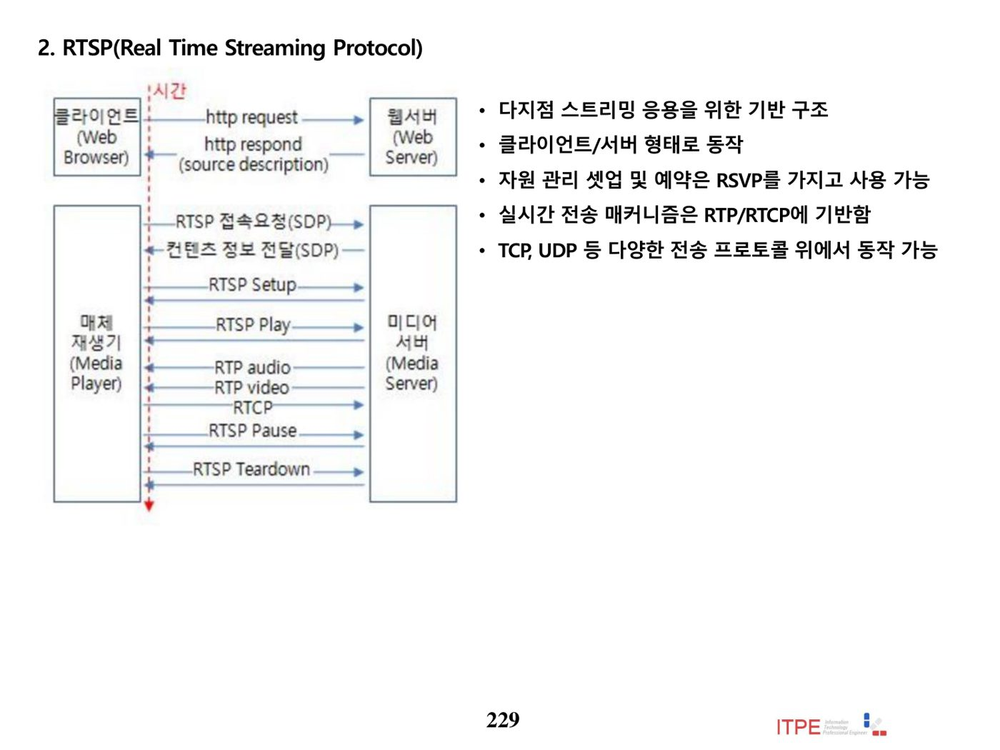
1. 무선통신 기술 데이터 전송속도와 커버리지 (원본 p.230)
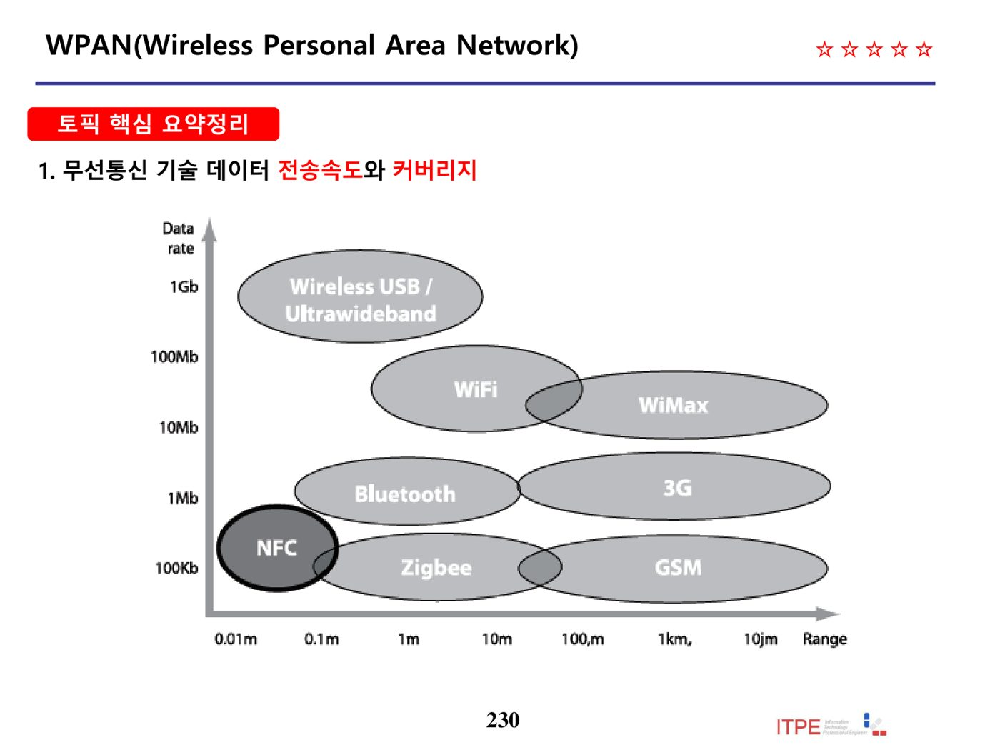
2. WPAN의 정의 (원본 p.231)
▸ 원본 p.231 표: WPAN의 정의
| 구분 | WLAN | Bluetooth | Zigbee | UWB |
|---|---|---|---|---|
| 표준 | 802.11 | 802.15.1 | 802.15.4 | 802.15.3a |
| 주파수 | 2.4GHz/5GHz | 2.4GHz | 2.4GHz | 5.1~10.6GHz |
| 변조 | DSSS | FHSS | DSSS | Baseband |
| 속도 | 11Mbps 이상 | 1~10Mbps | 20~250Kbps | 100~500Mbps |
| 거리 | 50~100m | 10m | 10~100m | 20m |
| 네트워크 | 점 대 점 | Ad-Hoc | Ad-hoc, Mesh, Star | 점 대 점 |
1. 블루투스(Bluetooth)의 정의 (원본 p.232)
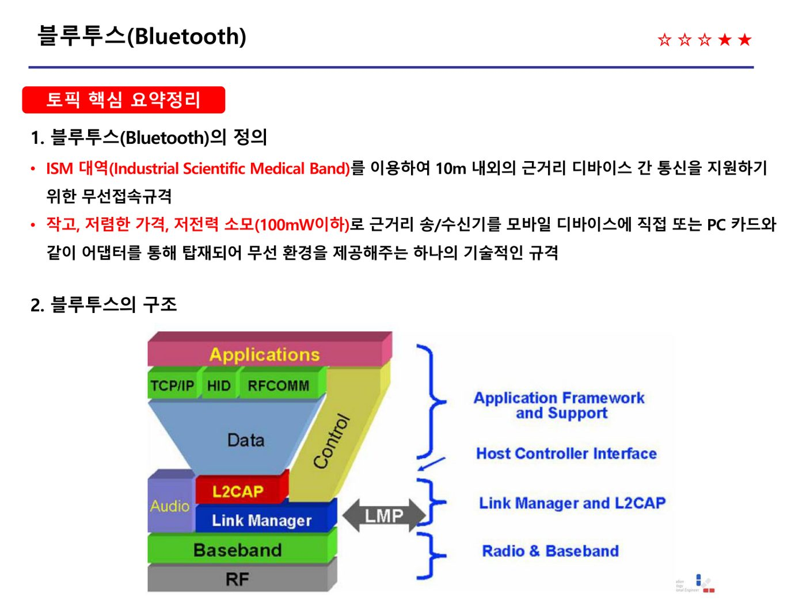
3. 블루투스 망구성(Topology) (원본 p.233)
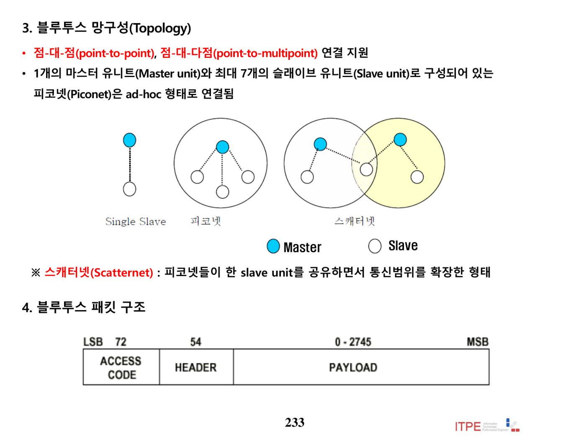
5. 블루투스 링크 방식 (원본 p.234-235)
▸ 원본 p.234 표: 블루투스 링크 방식
| 구분 | 내용 |
|---|---|
| SCO link | • 동기식 연결 지향형 링크(synchronized connection oriented link) • 예약된 타임 슬롯(slot)을 통해 데이터 전송(625μs 간격으로 동기화) • Master/Slave 사이의 포인트-투-포인트(Point-To-Point) 연결 • 패킷 재전송(retransmission) 수행 안 함(비신뢰성 통신) • 음성 전송 채널에 주로 사용 |
| ACL link | • 비동기식 연결 지향형 링크(asynchronous connectionless link) • 예정된 타임 슬롯이 없음(비동기적 통신) • 포인트-투-멀티포인트(Point-To-Multi point) 연결 가능(하나의 Master/Slave 간 ACL 링크는 반드시 한 개만 존재) • 패킷 재전송(retransmission)을 수행(신뢰성 통신) • 주로 데이터 통신에 이용 |
▸ 원본 p.235: 블루투스 4.0 특징
- 블루투스 h2.x+EDR(Enhanced Data Rate), 블루투스 h3.0+HS(High Speed) 등과 호환 구분 내용 저전력 블루투스(Low Energy)
- 전력소모를 최소화, 배터리 수명 연장 클래식 블루투스(Classic Bluetooth)
- 1.0부터 2.1로 이어져온 기존 블루투스 기술 하이스피드 블루투스(High Speed)
- 와이파이를 활용한 HS 고속 전송 기술
- 3가지 모드
- 싱글모드와 듀얼모드 분리 구분 내용 싱글모드
- 비콘, 센서 등과 같은 독립형 제품에 사용 듀얼모드
- 기존 블루투스와 저에너지 기술이 적용, 주로 휴대폰에 사용
- 스코프 커버리지(Scope of Coverage) : 건물 등 장애물에 따라 일정 범위에서만 사용 가능(10~100)
- 자동 주파수 호핑(Frequency Hopping) : 하위버전 식별, 고속 주파수 호핑
- 서스펜드(Suspend) : 전송을 수신하기 전까지 저전력을 위해 휴면 모드
- 안정성 : AES 128비트, CCM 암호화 알고리즘 적용으로 보안기능 강화
7. 블루투스 버전별 비교 (원본 p.236-251)
▸ 원본 p.236 표: 블루투스 버전별 비교
| 구분 | 블루투스 1.0 | 블루투스 2.0 | 블루투스 3.0 | 블루투스 4.0 |
|---|---|---|---|---|
| 개발시기 | • 1998 | • 2001 | • 2009 | • 2010 |
| 전송속도 | • 500kbps | • 1~3Mbps | • 1~3Mbps(최대 24Mbps) | • 1Mbps |
| 전력소모 | • 많음 | • 적음 | • 많음 | • 매우적음 |
| 보안 | 낮다 높다 | |||
| 제품 | • 핸드폰, 핸즈프리 | • 헤드셋, 마우스 | • PMP, UMPC | • 건강, 가전, 비콘, 임베디드 등 |
| 구분 | 내용 |
|---|---|
| Baseband | • 물리채널을 정의, Hopping, Link 설정 |
| Link Manager Protocol | • 베이스밴드의 H/W를 직접 제어하는 펌웨어 레벨의 SW 호스트에 존재하는 프로토콜 |
| HCI(호스트 컨트롤러 인터페이스) | • 호스트와 호스트 컨트롤러 사이에 명령어/수행결과 및 데이터를 전달 |
| L2CAP(Logical Link Control and Adaptation Protocol) | • 프로토콜 멀티플렉싱, SAR(Segmentation and Reassembly) • QoS, Group 관리 |
| 구분 | 내용 |
|---|---|
| SCO link | • 동기식 연결 지향형 링크(synchronized connection oriented link) • 예약된 타임 슬롯(slot)을 통해 데이터 전송(625μs 간격으로 동기화) • Master/Slave 사이의 포인트-투-포인트(Point-To-Point) 연결 • 패킷 재전송(retransmission) 수행 안 함(비신뢰성 통신) • 음성 전송 채널에 주로 사용 |
| ACL link | • 비동기식 연결 지향형 링크(asynchronous connectionless link) • 예정된 타임 슬롯이 없음(비동기적 통신) • 포인트-투-멀티포인트(Point-To-Multi point) 연결 가능(하나의 Master/Slave 간 ACL 링크는 반드시 한 개만 존재) • 패킷 재전송(retransmission)을 수행(신뢰성 통신) • 주로 데이터 통신에 이용 |
▸ 원본 p.241 표: WLAN(Wireless Local Area Network)
| 구분 | 전송방식 | 스펙트럼 | 최대전송속도 | 비고 |
|---|---|---|---|---|
| 802.11a | OFDM | 5GHz | 54Mbps | 802.11b보다 가격 높음 2.4GHz 주파수 대역과 호환 안됨 |
| 802.11b | DSSS | 2.4GHz | 11Mbps | QoS와 멀티미디어 지원에 있어서 단점 |
| 802.11g | DSSS, OFDM | 2.4GHz | 54Mbps | 보안, 주파수 간섭 QoS 문제 |
| 802.11n | OFDM | 2.4GHz, 5GHZ | 100Mbps | 전송속도를 높이기 위해 다중 안테나를 사용하는 MIMO(Multi Input Multi Output) 기술을 기반으로 함 |
| 802.11ac | ODFM | 5GHz | 1Gbps 이상 | Very High Throughput |
▸ 원본 p.242 표: BAM
| 구분 | 내용 |
|---|---|
| 포인트 조정함수 (PCF, Point Coordination Function) | • CSMA/CA(Carrier Sense Multiple Access with Collision Avoidance) 기반의 중앙집중형 폴링기법을 통해 조정 수행 • 선택적으로 RTS/CTS를 사용하여 Station간 매체공유 • 분산조정함수(DCF)보다 높은 우선순위 |
| 분산 조정함수 (DCF, Distributed Coordination Function) | • 인프라스트럭처(infrastructure) 모드에서만 사용 가능 • 충돌을 방지하기 위해 DIFS(Distributed Inter-Frame Space) 감지 후 랜덤한 Back-off 시간을 할당하여 강제로 전송지연 |
| 구분 | 전송방식 | 스펙트럼 | 최대전송속도 | 비고 |
|---|---|---|---|---|
| 802.11a | OFDM | 5GHz | 54Mbps | • 802.11b보다 가격 높음 • 2.4GHz 주파수 대역과 호환 안됨 |
| 802.11b | DSSS | 2.4GHz | 11Mbps | • QoS와 멀티미디어 지원에 있어서 단점 |
| 802.11g | DSSS, OFDM | 2.4GHz | 54Mbps | • 보안, 주파수 간섭 QoS 문제 |
| 802.11n | OFDM | 2.4GHz, 5GHZ | 100Mbps | • 전송속도를 높이기 위해 다중 안테나를 사용하는 MIMO(Multi Input Multi Output) 기술을 기반으로 함 |
| 구분 | 내용 |
|---|---|
| 포인트 조정함수 (PCF, Point Coordination Function) | • CSMA/CA(Carrier Sense Multiple Access with Collision Avoidance) 기반의 중앙집중형 폴링기법을 통해 조정 수행 • 선택적으로 RTS/CTS를 사용하여 Station간 매체공유 • 분산조정함수(DCF)보다 높은 우선순위 |
| 분산 조정함수 (DCF, Distributed Coordination Function) | • 인프라스트럭처(infrastructure) 모드에서만 사용 가능 • 충돌을 방지하기 위해 DIFS(Distributed Inter-Frame Space) 감지 후 랜덤한 Back-off 시간을 할당하여 강제로 전송지연 |
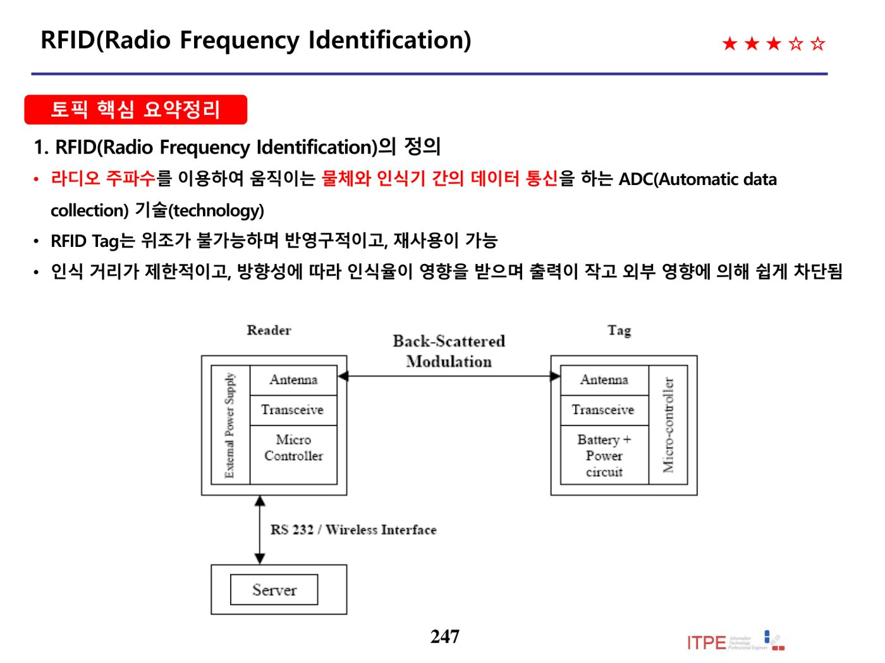
▸ 원본 p.248 표: BAM
| RFID Tag 구분 | 주요특징 및 적용분야 | |
|---|---|---|
| R/W 유무에 따른 분류 | Read Only | • 제조시 제조사에서 프로그래밍 된 tag • 정보내용은 변경 불가 • 가격이 저렴하고 wirte 과정이 필요없는 공정에 활용 |
| OTP (One Time Programming) | • WORM(Write Only Read Many) • 사용자가 데이터를 1회 Write 가능 | |
| Read/Write | • End-user 누구나 write 기능을 이용할 수 있음 • 가장 다양한 응용분야에서 적용이 가능한 Tag | |
| 전원 공급에 따른 분류 | Passive | • 배터리가 없으며, 보통 수 cm ~ 수 m 인식범위 내 사용 • 가격이 저렴하고 반영구적 수명(약 10년 이상) • 물류관리, 교통, 보안, 전자상거래 등에 적용 가능 |
| Active | • Tag에 배터리가 부착되어 수십 m 인식범위 내 사용 • 고가이며 배터리 수명제한(1~3년) • 환경감시, 군수, 의료, 과학 등에 적용 가능 |
▸ 원본 p.249 표: BAM
| 구분 | 내용 |
|---|---|
| EPC | • Electronic Product Code • EPC Network에서 기본이 되는 코드체계 • 오브젝트가 생산되거나 이미 존재하는 오브젝트들에게 주어지는 일련번호 |
| RFID Reader | • 무선으로 오브젝트에 붙어 있는 태그의 정보를 읽고 이를 Savant에서 인식할 수 있는 데이터 형식으로 변경 |
| ONS Server | • PML Server의 위치정보를 SAVANT에게 리턴 해주는 역할 |
| PML Server | • Product에 대한 정보와 Product 관련 기타 정보 등을 XML 형태로 저장 |
| SAVANT | • EPC Network에서 모든 구성요소와 연결되어 원활한 데이터 이동과 Auto-ID에서 일어나는 이벤트 처리 |
| 구분 | 내용 |
|---|---|
| 상호 유도 방식 (Inductively coupled) | • 코일 안테나를 이용하여 태그의 IC칩을 동작시키기 위한 전력을 리더기로부터 공급되는 수동형, 근거리(1m 이내) 사용 |
| 전자기파 방식 (Electromagnetic wave) | • 고주파 안테나를 이용해서 서로 무선접속을 하며, IC칩을 구동하기 위한 충분한 전력을 리더기로부터 공급을 받지 못하므로 장거리 인식을 위한 추가적인 전지 내장한 능동형으로 주로 구현, 중장거리(3~10m) 사용 |
| 구분 | 내용 |
|---|---|
| 상호 유도 방식 | • Inductively coupled 방식 • 코일 안테나를 이용하여 태그의 IC칩을 동작시키기 위한 전력을 리더기로부터 공급되는 수동형, 근거리(1m 이내) 사용 |
| 전자기파 방식 | • Electromagnetic Wave 방식 • 고주파 안테나를 이용해서 서로 무선접속을 하며, IC칩을 구동하기 위한 충분한 전력을 리더기로부터 공급을 받지 못하므로 장거리 인식을 위한 추가적인 전지 내장한 능동형으로 주로 구현, 중장거리(3~10m) 사용 |
1. NFC(Near Field Communication)의 정의 (원본 p.252-259)
▸ 원본 p.252 표: NFC(Near Field Communication)
| 구분 | 내용 |
|---|---|
| 표준 | • ISO/IEC 18092(NFC) |
| 주파수 대역 | • 13.56MHz |
| 인식거리 | • 약 10~20cm 이내 |
| 전송속도 | • 422kbps ~ 1Mbps |
| 동작모드 | • 능동 및 수동 |
| 비고 | • 리더와 리더 간의 통신 지원, NFC 장치들 변조방식과 코딩, 전송속도 RF 인터페이스의 프레임 포맷, 초기화시의 데이터 충돌 제어를 위한 초기화 방식 및 조건 명시 |
▸ 원본 p.253: BAM
모드 내용 카드모드
- 비접촉식 스마트카드 기술 및 보안으로 교통카드와 할인쿠폰 등 다양한 모바일 결제 방식 제공 RFID 리더 모드
- 단말 기기 뿐만 아니라 RFID 태그가 부착되어 있는 스마트포스터 등을 이용한 웹 사이트 연결 및 정보 획득 P2P 모드
- 스마트폰과 PC 및 가전제품 기기 간 데이터 송수신 및 파일 공유
3. NFC 동작모드
4. NFC 활용분야
- 비접촉 근거리 무선 통신 기술임에도 불구하고, 암호화 기술이 적용되어 무선 통신 중에도 정보가 외부로 유출되지 않기 때문에 역/공항, 차량, 사무실, 가게/레스토랑, 극장/경기장 등 다양한 부문에서 활용 가능
- 기술발달로 NFC기반 인프라 구축 및 탑재 비용이 하락함에 따라 NFC 기능이 스마트폰에 기본으로 탑재되어 애플리케이션을 이용한 다양한 활용성 증가
▸ 원본 p.254 표: BAM
| 구분 | 저주파 | 고주파 | 극초단파(UHF) | 마이크로파 | |
|---|---|---|---|---|---|
| 125, 134KHz | 13.56MHz | 433.92MHz | 860~960MHz | 2.45GHz | |
| 인식거리 | < 60cm | 약 60cm | 약 50~100m | 약 3~10m(수동) | 약 1m(수동) |
| 일반특성 | • 비교적 고가 • 환경에 의한 성능저하 거의 없음 | • 저주파 보다 저가 • 짧은 인식거리, 다중 태그 인식에 적합 | • 긴 인식거리 • 실시간 추적 및 컨테이너 내부 습도, 충격 등 환경 센싱 | • 가장 저가 생산 • 다중 태그 인식거리와 성능이 가장 뛰어남 | • 900MHz 대역 태그와 유사한 특성 • 환경에 대한 영향을 가장 많이 받음 |
| 동작방식 | • 수동형 | • 수동형 | • 능동형 | • 능동/수동형 | • 능동/수동형 |
| 적용분야 | • 공장 자동화 • 출입통제/보안 • 차량잠금장치 | • 수화물관리 • 출입통제/보안 • NFC • 교통카드(수동 형) | • 항만 컨테이너 관리 • 실시간 위치 추적 | • 공급망 관리 • 자동 통행료 징수(하이패스) • 능동형 | • 신분증 위조 방지 • 여권, ID 카드 • 위치추적 |
| 표준 | • ISO 18000-2 | • ISO 18000-3 | • ISO 18000-7 | • ISO 18000-6 | • ISO 18000-4 |
▸ 원본 p.256 표: NFC 통신기술 표준
| 구분 | 내용 |
|---|---|
| 표준 | ISO/IEC 18092(NFC) |
| 주파수 대역 | 13.56MHz |
| 인식거리 | 약 10~20cm 이내 |
| 전송속도 | 422kbps ~ 1Mbps |
| 동작모드 | 능동 및 수동 |
| 비고 | 리더와 리더 간의 통신을 지원하며, NFC 장치들의 변조방식과 코딩, 전송속도, RF 인터페이스의 프레임 포맷, 초기화 시의 데이터 충돌 제어를 위한 초기화 방식 및 조건을 명시 |
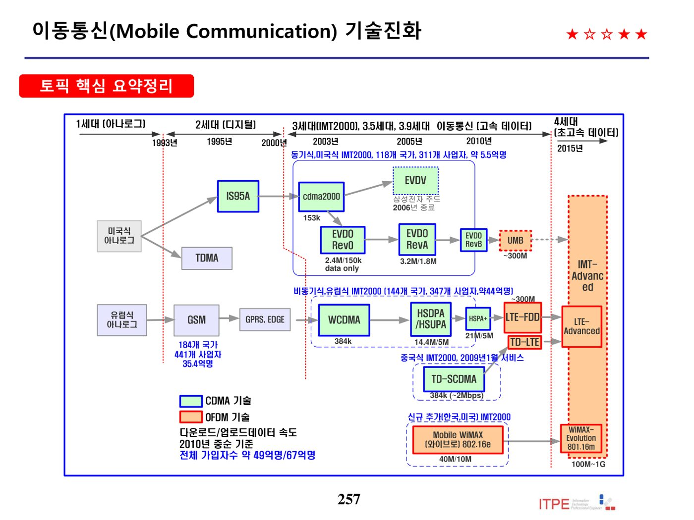
▸ 원본 p.258 표: LTE(Long Term Evolution)
| 구분 | 내용 |
|---|---|
| 주파수 기술 | • 4세대 이동통신이 사용하게 될 주파수를 효율적으로 송수신 할 수 있는 기술 • 직교 주파수 다중 분할(OFDM) 기술, 다중 입출력(MIMO) 기술, 소프트웨어 기반 이동통신(SDR) 기술, 스마트 안테나(SR) 기술 등 |
| 액세스 네트워크 | • 사용자들이 4세대 이동통신 네트워크에 접속할 수 있는 기술 • 셀 중심의 매시 네트워크, 애드 혹 네트워크 기술 |
| 코어 네트워크 | • 4세대 이동통신의 핵심, All-IP 네트워크 |
| 어플리케이션 | • 4세대 이동통신 단말기를 통해 유비쿼터스 브로드 밴드 서비스를 이용 |
▸ 원본 p.259 표: 구분
| 구분 | 구성요소 | 내용 |
|---|---|---|
| EPC | • S-GW (Serving Gateway) | • 사용자의 업/다운 링크 데이터 전송 |
| • P-GW (Packet Gateway) | • S-GW와 연동되어 패킷 데이터를 처리 | |
| • MME (Mobility Management Entity) | • 이동성 관리 및 시그널링 처리 | |
| eNode B | • DU (Digital Unit) | • 베이스밴드 신호처리 장치 |
| • RU (RF Unit) | • RF 신호처리 장치 |
3. LTE 기술표준의 진화 (원본 p.260-276)
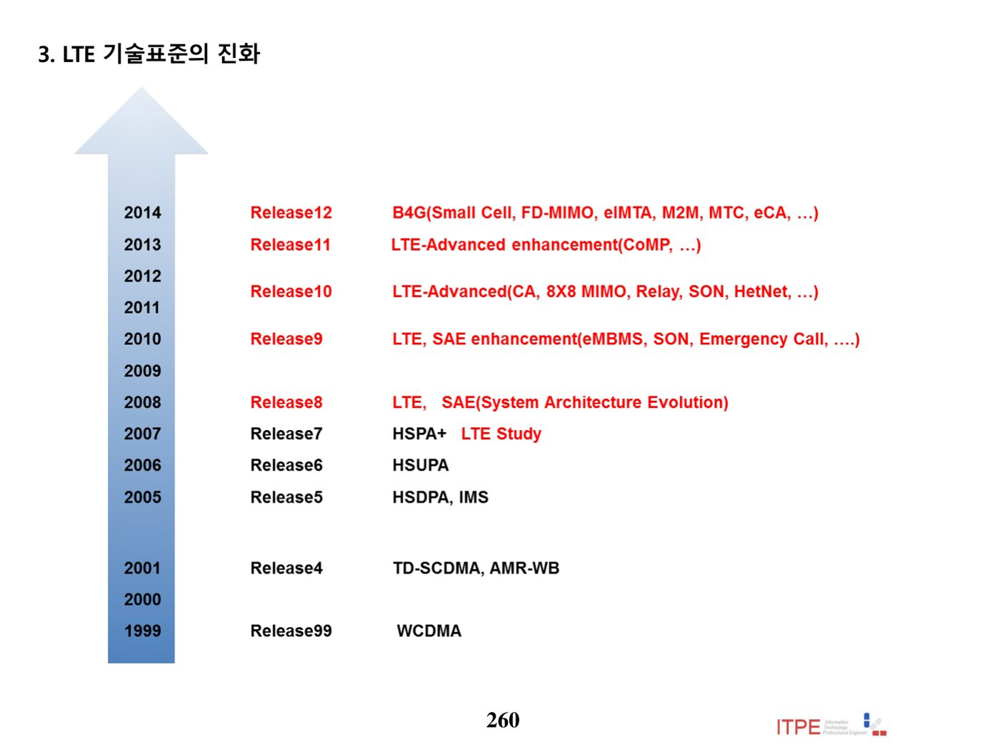
▸ 원본 p.261 표: LTE-A(Long Term Evolution-Advanced)의 핵심기술
| 핵심기술 | 내용 |
|---|---|
| 무선접속기술 | • 다운링크 : OFDMA(Orthogonal Frequency Division Multiple Access) • 업링크 : SC(Single Carrier)-FDMA |
| eICIC | • Enhanced Inter-Cell Interference Coordination • 전송시간 구간의 일부를 매크로셀이 전송하지 않게 설정하고, 이 구간에서 피코셀들에서 데이터 전송을 수행하여 성능을 개선시킨 기법 |
| CA | • Carrier Aggregation • 서로 다른 주파수 대역을 하나의 주파수 대역처럼 묶어 광대역 효과를 만들어주는 기술 |
| MIMO | • Multiple-Input Multiple-Output • 다중의 입출력이 가능한 안테나 시스템 |
| CoMP | • Coordinated Multi-Point • 이동통신망에서 셀(cell)의 경계에 있는 단말기의 전송품질을 향상시키기 위해 관련 기지국이 협력하여 통신하는 기술 |
| 릴레이 기술 (Relay) | • 커버리지 확장을 위해 릴레이 노드(RN) 사용 |
| LTE-Adv 요소 기술 | LTE 요소 기술 |
|---|---|
| 반송파 집성(Carrier Aggregation) | Multi Carrier |
| 8x8 MIMO 멀티 안테나 전송 기술 (DL MIMO, UL MIMO) | 2X2 MIMO 사용 |
| 협력형 다중 전송기술(CoMP : Coorperative Multipoints Tx/Rx) | Inter-Cell Interference Coordination(ICIC) 인접한 기지국 각 X2 I/F를 통해 셀들의 간섭 정보 교환 |
| 릴레이 기술(Relay) : 커버리지 확장을 위한 릴레이 노드(RN) 사용 |
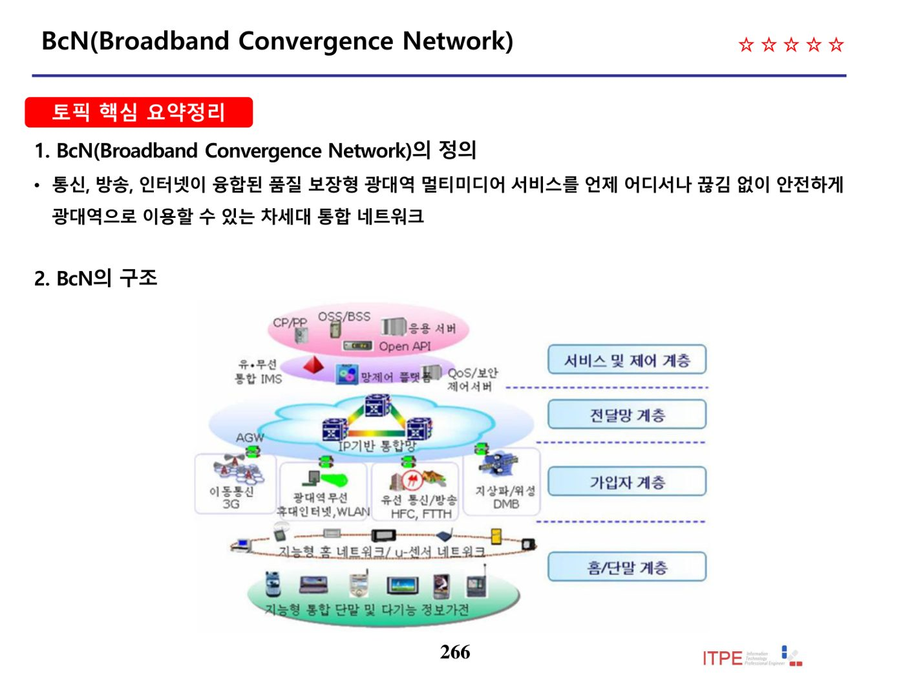
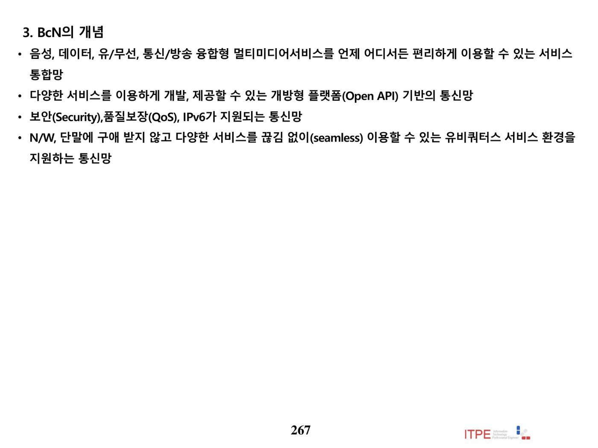
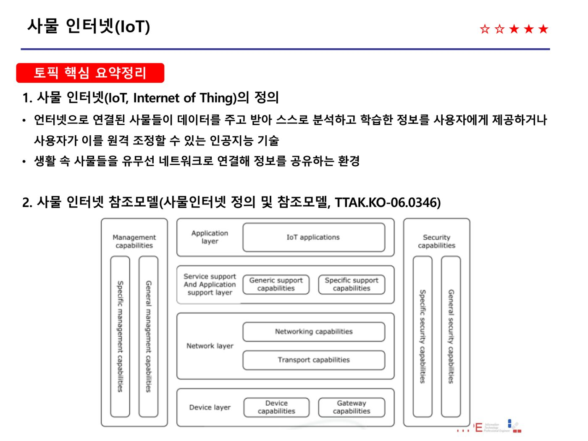
▸ 원본 p.269 표: 사물 인터넷 참조모델 계층별 기능(TTAK.KO-06.0346)
| 계층 | 내용 |
|---|---|
| 응용계층 | • 사물 인터넷 응용 |
| 서비스 지원 및 응용 지원 계층 | • 공통 지원 기능 • 특정 응용 지원 기능 |
| 네트워크 계층 | • 네트워킹 기능 : 자원제어, 이동성 관리, AAA(Authentication, Authorization, Accounting) 등 네트워크 연결을 위한 제어기능 • 전송 기능 : 데이터, 제어 및 관리 정보 전송 |
| 디바이스 계층 | • 디바이스 계층 기능은 논리적으로 디바이스 기능과 게이트웨이 기능 2개의 기능으로 구분됨 • 디바이스 기능 : 직접/간접 통신, 애드혹, 슬랩 앤 웨이크업 • 게이트웨이 기능 : 인터페이스 지원, 프로토콜 변환 |
| 계층 | 내용 |
|---|---|
| 응용계층 | • 사물 인터넷 응용 |
| 서비스 지원 및 응용 지원 계층 | • 공통 지원 기능 • 특정 응용 지원 기능 |
| 네트워크 계층 | • 네트워킹 기능 : 자원제어, 이동성 관리, AAA(Authentication, Authorization, Accounting) 등 네트워크 연결을 위한 제어기능 • 전송 기능 : 데이터, 제어 및 관리 정보 전송 |
| 디바이스 계층 | • 디바이스 계층 기능은 논리적으로 디바이스 기능과 게이트웨이 기능 2개의 기능으로 구분됨 • 디바이스 기능 : 직접/간접 통신, 애드혹, 슬랩 앤 웨이크업 • 게이트웨이 기능 : 인터페이스 지원, 프로토콜 변환 |
| 계층 | 내용 |
|---|---|
| 응용계층 | • 사물 인터넷 응용 |
| 서비스 지원 및 응용 지원 계층 | • 공통 지원 기능 • 특정 응용 지원 기능 |
| 네트워크 계층 | • 네트워킹 기능 : 자원제어, 이동성 관리, AAA(Authentication, Authorization, Accounting) 등 네트워크 연결을 위한 제어기능 • 전송 기능 : 데이터, 제어 및 관리 정보 전송 |
| 디바이스 계층 | • 디바이스 계층 기능은 논리적으로 디바이스 기능과 게이트웨이 기능 2개의 기능으로 구분됨 • 디바이스 기능 : 직접/간접 통신, 애드혹, 슬랩 앤 웨이크업 • 게이트웨이 기능 : 인터페이스 지원, 프로토콜 변환 |
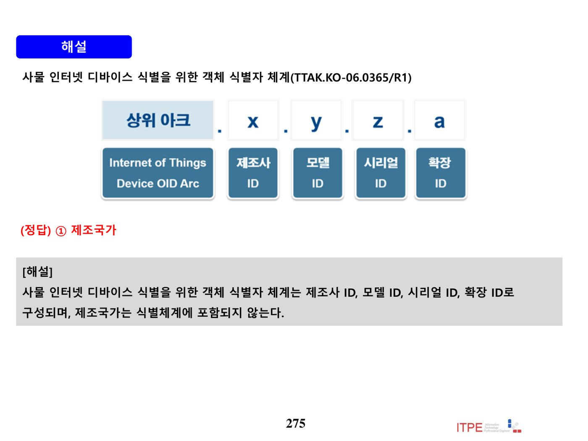
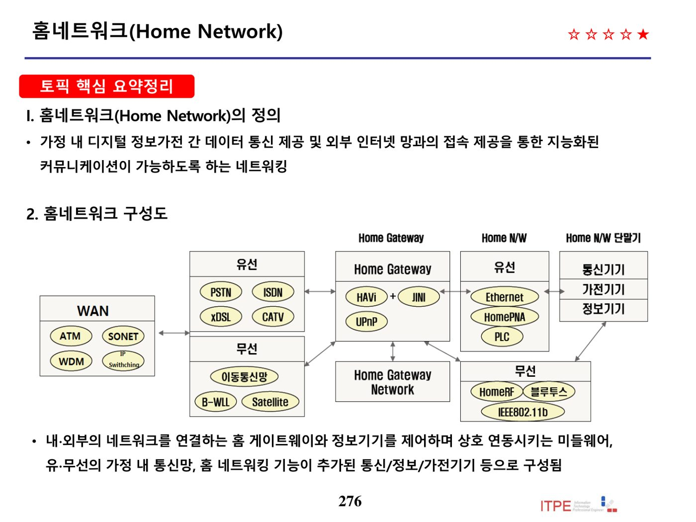
3. 홈네트워크 요소기술 (원본 p.277-281)
▸ 원본 p.277 표: BAM
| 구분 | 요소기술 | 주요내용 |
|---|---|---|
| 유선 통신 | 홈PNA | • 가정에 설치된 전화선을 이용해 적은 추가 비용으로 가정 내 정보통신 장비들을 하나의 네트워크에 연결하는 기술 |
| PLC | • 가정이나 사무실에 설치된 전력선으로 수십 MHz 이상의 고주파 통신신호를 고속으로 통신하는 것 | |
| IEEE 1394 | • 통신기기와 컴퓨터, 가전 제품을 단일 네트워크로 연결, 멀티미디어 데이터를 100Mbps부터 1Gbps까지 고속으로 주고 받을 수 있는 프로토콜 | |
| 무선 통신 | Home RF | • 2.4GHz 대역으로 50m 거리 내에 있는 최대 127개까지의 기기간 연결을 가능하게 하며, 전송속도는 1~2Mbps이나 접속기기 수에 따라 감소 |
| Bluetooth | • 기존의 데이터 망과 주변 장치들 간의 인터페이스, 고정된 네트워크 하부구조로부터 멀리 떨어진 장치들 간의 근거리 무선통신 규격 | |
| UWB | • 고용량 데이터 전송, 높은 전력 소모량 | |
| IEEE 802.11 | • IEEE 802.11b/g/a/n/ac 등의 무선랜 |
▸ 원본 p.278 표: 홈네트워크 미들웨어(Home Network Middleware)
| 구분 | 내용 |
|---|---|
| UPnP (Universal Plug and Play) | • 기존 PC에서 디바이스를 제어하던 Plug and Play 개념을 확장하여 사용자에게 어떤 작업도 요구하지 않고 기기를 네트워크에 접속가능하게 함 |
| Jini | • 선 마이크로시스템사에서 개발한 미들웨어로서 Java를 기반으로 하며, JVM(Java Virtual Machine) 위에서 동작하기 때문에 운영체제나 기타 하드웨어 플랫폼에 무관함 |
| HAVi(Home Audio Video interoperability) | • UPnP나 Jini와 달리 HAVi는 가전회사에서 시작된 홈 네트워크용 미들웨어로 HAVi의 특징은 우선 하부 네트워크 모듈이 IEEE 1394로 제한됨 |
| OSGi(Open Service Gateway Iniative) | • OSGi 단체의 역할은 미들웨어와 응용 프로그램 간의 API를 정의를 목적으로 함 • 여러 가지 미들웨어와 응용 프로그램을 분리하는 역할 담당 |
▸ 원본 p.279 표: 구분
| 구분 | Home PNA | IEEE 1394 | PLC | Ethernet |
|---|---|---|---|---|
| 표준 | V1/V2/V3 | 1394a/1394b | 지역별 | IEEE 802.3 |
| 속도 | 1/10/100Mbps | 400Mbps/3.2Gbps | 1/100Mbps | 10/100Mbps |
| 전송거리 | 150m | 4.5m/100m | 100m | 100m |
| 노드수 | 25개 | 63개 | 256개 | 1,024개 |
| 구분 | HomeRF | WLAN | Bluetooth | UWB | Zigbee |
|---|---|---|---|---|---|
| 표준 | V | IEEE 802.11a/b/g/n/ac | IEEE 802.15.1 | IEEE 802.15.3a | IEEE 802.15.4 |
| 주파수대역 | 2.4GHz | 5.2GHz, 2.4GHz | 2.4GHz | 3.1~10.6GHz | 2.4GHz |
| 전송속도 | 12Mbps | 54/11/300Mbps | 24Mbps (v3.0 기준) | 480Mbps | 250kbps |
| 전송거리 | 50m | 50/100m | 100m | 10m | 50m |
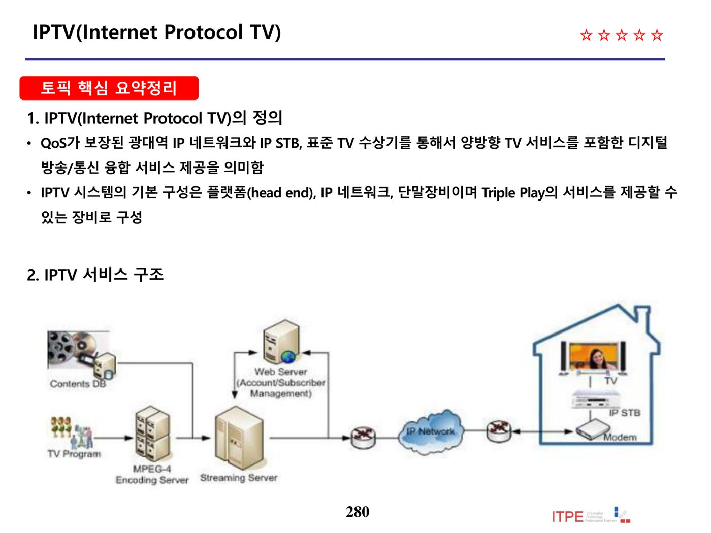
▸ 원본 p.281 표: BAM
| 구분 | ACAP | DVB-MHP | OCAP |
|---|---|---|---|
| 표준화 단체 | ATSC | DVB | Cablelabs |
| 지원가능 네트워크 | 지상파(위성, 케이블) | 위성(지상파, 케이블) | 케이블 |
| 기술기반 | Java TV, GEM, Havi |
| 구분 | CAS | DRM |
|---|---|---|
| 개요 | • 인증된 사용자만이 사용할 수 있도록 통제 | • 암호화 기술 이용, 디지털 콘텐츠와 불법 복제 및 유통 방지 |
| 암호화 방식 | • 다단계 키 또는 알고리즘 | • 일반적으로 1개의 License key로 복호화 |
| 장점 | • 다양한 비즈니스 모델 수용 가능 • 하드웨어 및 소프트웨어 방식의 이중 암호화 적용으로 보안성 우수 | • 컨텐츠 접근/배포 권한 제어 우수 • 솔루션 비용 저가 |
| 단점 | • 비용 고가 • 복합한 구조 | • 소프트웨어 방식의 단일 암호화 적용으로 보안성 상대적 취약 |
| 적용 | • Cable, 위성, IPTV | • VOD 사업자 |
1. 위치정보 측위기술의 종류 (원본 p.282-286)
▸ 원본 p.282: 위치정보 측정기술
1. 위치정보 측위기술의 종류 • 위치정보 측위기술은 이동통신망의 기지국 셀 정보인 RF 전파환경 정보를 이용하여 소프트웨어적으로 위치를 계산하는 네트워크 기반 측위(network-signal based) 방식, 이동단말기 내에 장착된 GPS(Global Positioning System) 수신기를 이용한 위성신호 기반 측위(satellite-signal based) 방식, 유비쿼터스 측위방식, 혼합측위 방식으로 구분
2. 위치정보 측위기술 구분 내용 위성통신 이용
- 삼각 측량(D-GPS, A-GSP) 이동통신 이용
- 삼각 측량(TOA, AOA, TDOA, Cell-ID) 무선통신 이용
- IrDA, 초음파, RFID, UWB 유비쿼터스 측위
- WiFi, Bluteooth, RFID, RTLS
| 구분 | 내용 |
|---|---|
| 위치(Location) | • CPU, 파일, 입출력 장치, 프로그램, 데이터베이스 시스템 등의 하드웨어와 소프트웨어 자원이 어떤 컴퓨터에 있는지 알 필요가 없이 이용할 수 있음 |
| 이동(Migration) | • 자원을 어떤 컴퓨터에서 다른 컴퓨터로 이동하더라도 그것을 의식하지 않고, 사용자가 그 자원을 이용할 수 있음 |
| 중복(Replication) | • 동일한 자원이 다수의 컴퓨터에 존재하고 있더라도 사용자에게는 하나의 자원 |
| 이기종(Heterogeneity) | • 분산 시스템이 다른 종류의 하드웨어와 소프트웨어로 구성되어 있더라도 사용자는 이들의 상이함을 의식하지 않고 이용할 수 있음 |
| 장애(Failure) | • 분산시스템 내의 구성요소(하드웨어, 소프트웨어)가 장애를 일으켜도 시스템으로서의 서비스를 제공할 수 있음 |
| 규모(Scale) | • 분산 시스템 내에 있는 구성요소를 추가하거나 제거하는 등의 규모 변화에 대해서도 사용자는 이것을 의식하지 않28고6 시스템을 이용할 수 있음 |
2. 분산시스템 투명성(계속) (원본 p.287)
▸ 원본 p.287 표: 분산시스템 투명성(계속)
| 구분 | 내용 |
|---|---|
| 병행(Concurrency) 투명성 | • 자원의 위치를 모르더라도 사용자들이 자원을 병행하여 처리 및 공유 • 다중의 사용자가 자동적으로 자원을 공유하고 사용자의 인식 없이도 병렬적으로 수행 |
| 성능(Performance) 투명성 | • 여러 부하에 대해 성능을 증가시키기 위하여 시스템을 재구성 • 같은 프로그램을 수행 할 시 단일 기계에서 수행할 때 보다 성능 향상 |
3. 비동기 트랜잭션 처리(계속) (원본 p.288-293)
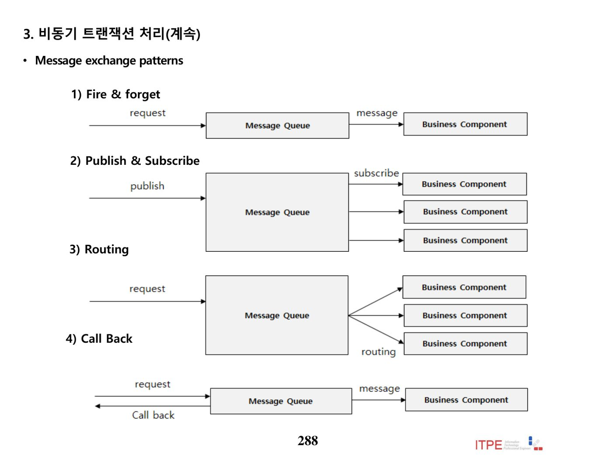
| 구분 | 내용 |
|---|---|
| 위치(Location) | • CPU, 파일, 입출력 장치, 프로그램, 데이터베이스 시스템 등의 하드웨어와 소프트웨어 자원이 어떤 컴퓨터에 있는지 알 필요가 없이 이용할 수 있음 |
| 이동(Migration) | • 자원을 어떤 컴퓨터에서 다른 컴퓨터로 이동하더라도 그것을 의식하지 않고, 사용자가 그 자원을 이용할 수 있음 |
| 중복(Replication) | • 동일한 자원이 다수의 컴퓨터에 존재하고 있더라도 사용자에게는 하나의 자원 |
| 장애(Failure) | • 분산시스템 내의 구성요소(하드웨어, 소프트웨어)가 장애를 일으켜도 시스템으로서의 서비스를 제공할 수 있음 |
| 규모(Scale) | • 분산 시스템 내에 있는 구성요소를 추가하거나 제거하는 등의 규모 변화에 대해서도 사용자는 이것을 의식하지 않고 시스템을 이용할 수 있음 |
| 병행(Concurrency) 투명성 | • 자원의 위치를 모르더라도 사용자들이 자원을 병행하여 처리 및 공유 |
| 성능 투명성 | • 같은 프로그램을 수행 할 시 단일 기계에서 수행할 때 보다 성능 향상 |
▸ 원본 p.291: [감리 17번 79번]
메시지 큐(Message Queue)를 이용한 비동기 패턴에 대한 설명으로 가장 적절한 것은? 메시지 큐를 사용하는 패턴 중에서 가장 일반적인 비동기 호출 패턴으로, 클라이언트가 호출한 후 큐 에 메시지가 제대로 들어갔으면 메시지의 처리 결과에 관계없이 응답을 기다리지 않고 바로 반환한다.
① Fire & Forget 패턴
② Publish & Subscribe 패턴
③ Routing 패턴
④ Call Back 패턴
▸ 원본 p.292 표: BAM
| 구분 | 내용 |
|---|---|
| Fire & Forget | • 특정 프로세스를 호출한 경우 호출된 프로세스의 응답을 대기하지 않고 다음 작업을 처리하는 비동기 패턴 |
| Publish & Subscribe | • 발행/구독자 모델. 데이터 생성자가 데이터를 발행하면 구독자 프로세스가 데이터를 읽어가는 패턴 |
| Routing | • 중앙집중화된 메시지 브로커를 사용하여 HUB & SPOKE 방식의 메시지 분기 처리 |
| Call Back | • 특정 프로세스 호출 후 다음 작업을 수행하며, 호출된 프로세스가 완료시 호출한 프로세스에게 요청 전달 |
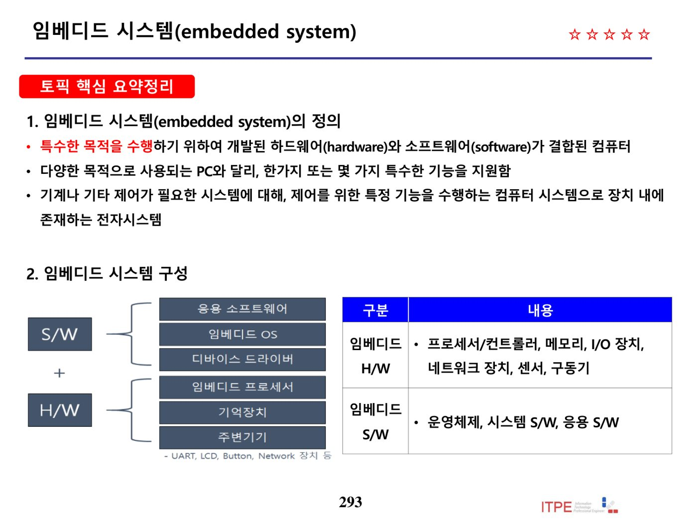
📚 기출·예상문제 (20문항) — 원문 수록
본 편(전송매체·무선통신·분산시스템)에 해당하는 원본 페이지 범위의 기출·예상문제를 정리했습니다. 정답·해설은 강의 원문 기준입니다.
메시지 큐를 사용하는 패턴 중에서 가장 일반적인 비동기 호출 패턴으로, 클라이언트가 호출한 후 큐 에 메시지가 제대로 들어갔으면 메시지의 처리 결과에 관계없이 응답을 기다리지 않고 바로 반환한다. (원본 p.291)